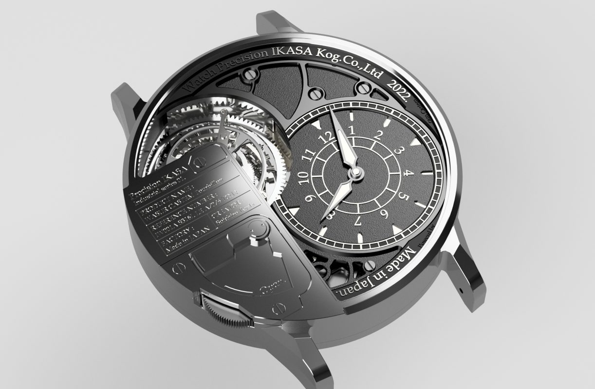
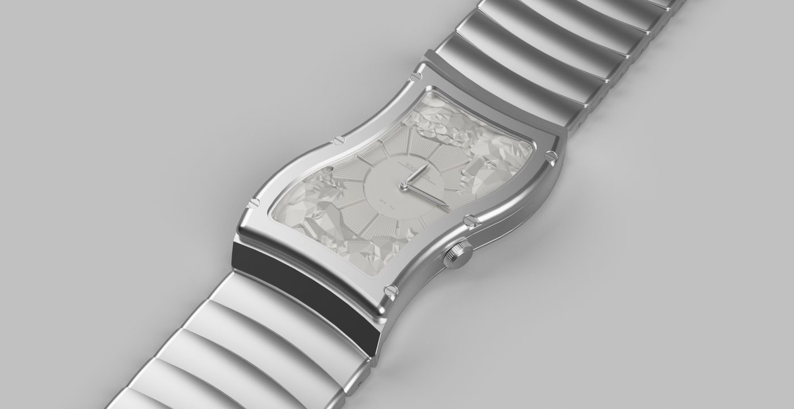

時 を 結 晶 に
KEREN
Independent Watchmaker
水 は 光 を 集 め 時 は 結 晶 と な る
Scroll
Chapter I
The Drop that Becomes Time.
一 滴 が 時 に な る
雨の一滴が水面に落ちて、波紋を描くように。
小さな部品のひとつひとつが結びつき、
やがて時計という静謐な器になります。
独立時計師ケレンは、設計から組立まで、
すべての工程をひとりの手で行う職人です。
透明感と精密さの結晶を、ひとつずつ。
Chapter II
Two Currents.
二 つ の 流 れ
assets/collection-crown.jpg
Haute Horlogerie
La Couronne
限定制作の最高峰。ブランドの世界観を純粋に結晶化した、王冠のような気品の系譜。

assets/collection-tree.jpg
Evolving Species
L'Arbre du Temps
生命の分類学のように枝分かれし、基礎から多様な環境へ進化していくシリーズ。
Chapter III
Selected Works.
作 品 選
assets/work-01.jpg
La Couronne — 01
Clair de Lune
月光のように透過する限定作品

assets/work-02.jpg
L'Arbre — 基礎種
Origine I
進化の起点となる原型

assets/work-03.jpg
L'Arbre — 進化種
Ondine
水の精を宿した流動形

assets/work-04.jpg
L'Arbre — 分化種
Abyssale
深淵の静けさを封じた形態

assets/work-05.jpg
La Couronne — 02
Saphir Éternel
青の永遠を刻む限定作品

assets/work-06.jpg
Bespoke
Nocturne
お客様と共に生まれた夜曲
時 計 と は、
水 が 光 を 宿 す よ う に、
静 寂 が 時 を 宿 す 器 で あ る。